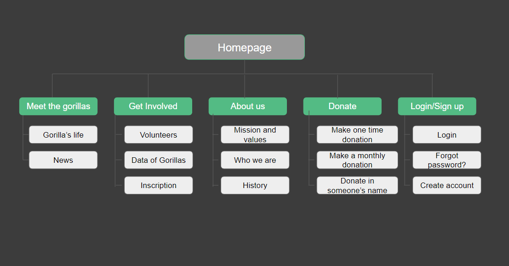

The main factors of Gorilla's problem are illegal hunting, disease and habitat degradation so is in important to make conscience about this issue. A lot of people want to help but doesn’t know how to do it, so this app is a donation app that provides information, news and updates about gorillas.
The project has different phases: conducting interviews, paper and digital wireframing, low and high-fidelity prototyping, conducting usability studies, accounting for accessibility, iterating on designs, determining information architecture, and responsive design.
Design a user experience to help conserve an endangered species of gorillas.
May 2022 to July 2022
Design an app to help conserve an endangered species of gorilla.
UX designer covered the design process from beginning to end on my own.
Today, only 1063 mountain gorillas exist in the wild, while in 2016 just over 3800 specimens of Grauer’s gorilla survived, the largest subspecies of all gorillas. The main factors are illegal hunting, disease and habitat degradation so users think that is important make conscience about this issue.
A lot of people want to help but doesn’t know how to do it, specially if live in other countries so this donation app is very useless because you can donate, but also see information, news and updates about gorillas.
After creating the competitive audit, ideation, paper and digital wireframes, I create a low fidelity prototype.
Unmoderated usability study
Chile, remote
7 participants
30-60 minutes
People want an easy way to donate gorillas cause.
Users want updates about organization acts to help gorillas and information about what things so with the money.
Users think that will be interest an option to donate monthly, yearly, etc and payment automatically.
The high-fidelity prototype followed the same user flow as the low-fidelity prototype, including design changes made after the usability study.
I designed the site with alt text available on each page for smooth screen reader access.
Used icons to help make navigation easier.
I used clear colors to users that have visual problems.
With the app designs completed, I started work on designing the responsive website. I focus on gorillas and different types of donations to be more friendly to the user.
My goal here is to make strategic information architecture decisions that improve overall website navigation. The structure I chose was designed to make things simple and easy.
The app makes users feel like Save Gorillas really thinks about a social issue in a friendly way.
One quote from peer feedback: “I like that exist a page that are really interesting in Gorilla, an animal that are same that human but is endangered and this will help to the cause”.
I learned that even though the problem I was trying to solve was a big one, diligently going through each step of the design process and aligning with specific user needs helped me come up with solutions.
Add more educational resources for users to learn about endangered gorillas.
Conduct research on how successful the app is in reaching the goal to mount of donations.
Provides information about gorilla's life and the organizations acts.
Thank you for your time reviewing my work on the Save Gorillas! If you'd like to see more or get in touch, please fill the information contact information below.